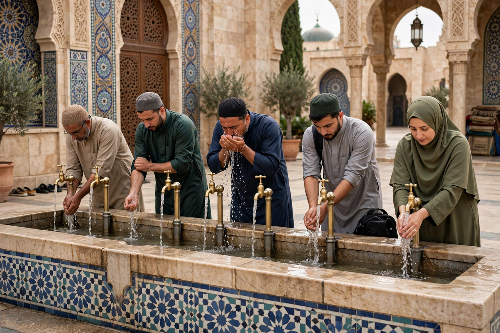

From Wikipedia, the free encyclopedia
| Wudu | |
|---|---|
 Performing wudu at a mosque's ablution area | |
| Arabic | الوضوء (al-wuḍūʾ) |
| Type | Ritual ablution (minor) |
| Required for | Salah (prayer), handling the Quran (per most schools) |
| Scriptural basis | Quran 5:6 |
Wudu (Arabic: الوضوء, al-wuḍūʾ) is the Islamic procedure for cleansing parts of the body, a type of ritual purification, or ablution. It is the minor ablution performed by Muslims before prayer (salah) and certain other acts of worship; the major ablution, required after major ritual impurity, is called ghusl.
The Quran (5:6) commands: "O you who believe, when you rise to prayer, wash your faces and your hands up to the elbows, and wipe your heads, and your feet up to the ankles." In the practice taught by the Prophet's example (sunnah), wudu typically proceeds: forming the intention (niyyah) and saying bismillah; washing the hands three times; rinsing the mouth and the nose; washing the face; washing the forearms to the elbows; wiping the head and ears; and washing the feet to the ankles — the right side before the left. Mosques provide dedicated ablution fountains and rooms for the rite, which worshippers perform before turning toward the qibla to pray.
According to the legal schools, wudu is nullified by natural discharges, deep sleep, and (with differences among schools) by bleeding, vomiting, or touching. Where water is unavailable or harmful, dry ablution with clean earth or sand (tayammum) substitutes. Wudu may also be renewed voluntarily — remaining in a state of wudu is considered meritorious — and many Muslims perform it before sleeping or reading the Quran.
As one of the acts of islam enumerated in the Hadith of Gabriel's framework of practice, wudu embodies Islam's joining of bodily cleanliness with spiritual readiness: the Prophet is reported to have said that purity is half of faith. Its ritual rhythm punctuates the Muslim day, from dawn prayer to the nights of Ramadan and the pilgrimage days of Dhu al-Hijjah.